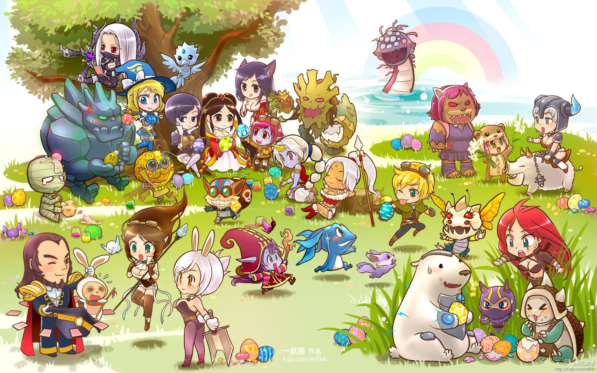
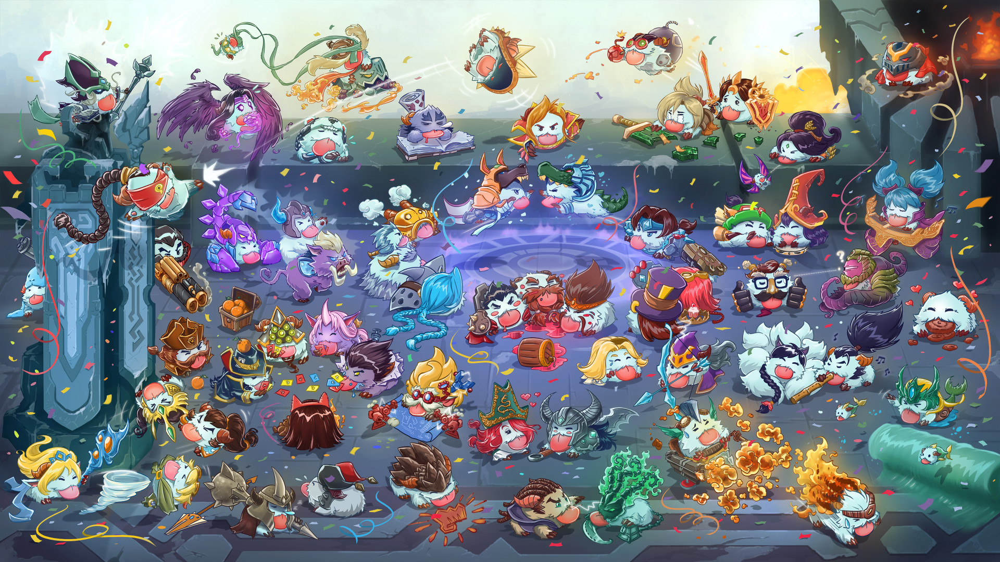

League of Legends este un MOBA creat și publicat de către compania Riot Games în 2009. Având ca inspirație harta Defense of the Ancients din Warcraft III, fondatorii Riot au vrut să creeze un joc propriu-zis din același gen. Încă de când a fost lansat în anul 2009 luna octombrie, jocul a fost gratuit, singura sursă de venit fiind din modificările caracterelor ce pot fi cumpărate.
În joc, două echipe a câte cinci jucători se luptă într-un mod PvP (Player vs Player). Fiecare echipă ocupă și apără propria jumătate de hartă. Fiecare dintre cei zece jucători controlează un personaj, acesta are numele de ”Campion”, fiecare cu abilități și stiluri de-a îl juca. În timpul unui meci, campionii devin mai puternici colectând puncte de experiență și cumpărând ”iteme” pentru a învinge echipa inamică. În modul principal de joc, ”Summoner's Rift”, o echipă câștigă împingând culoarele până în baza inamică și distrugând ”nexus-ul” aflat în mijlocul bazei.
League of Legends a primit multe recenzii pozitive, criticii scoțând în evidență accesibilitatea acestuia și design-ul campionilor. Deoarece jocul a rămas popular pe durata a mai multor ani, a primit o reevaluare care a avut recenzii pozitive. În 2019 jocul avea opt milioane de jucători activi, iar popularitatea sa a dus la crearea unor clipuri muzicale, benzi desenate, povești și un serial animat.
Gameplay: Două echipe a câte cinci jucători concurează pentru a distruge nexus-ul inamic, care este protejat de jucătorii inamici și structuri defensive cu numele de „Turete”. Nexus-ul fiecărei echipe se află în baza lor alături de fântână (locul unde jucătorii încep meciul și se respawnează după ce mor). Minionii, care sunt entități ce nu pot fi controlate de jucători, sunt generați din cele trei inhibitoare ale fiecarei echipe. Aceste inhibitoare sunt structuri aflate în spatele celei de a III-a turetă de pe fiecare culoar. Distrugând unul dintre inhibitoarele inamice, apar minioni mai puternici pe acel culoar. Minionii avansează către turetele de pe acelasi culoar pe care s-au spawnat. Cele 3 culoare sunt top, middle și bottom. În junglă - locația dintre culoare - sunt monștri care, la fel ca minionii, reapar la intervale regulate de timp. Monștri oferă aur și experientă atunci când sunt uciși. O altă clasă de monștri se află în râul care separă jungla celor două echipe. Acești monștri necesită mai mulți jucători dintr-o echipă pentru a fi uciși și oferă abilități speciale echipei care îi răpune. De exemplu, echipa care răpune Baronul Nashor primește minioni mai rezistenți, devenind mai dificil pentru echipa inamică să îi ucidă.
Meciurile pe Summoner's Rift pot dura între 15 minute și o oră. Topul si midul au câte un jucător spre deosebire de bot care are 2. Jucători ucid minioni pentru a acumula aur și experiență proces numit ”farmat” și încearcă să îi oprească pe oponenți lor din a face același lucru. Un al cincilea jucător, jungla, farmează monștrii din junglă și, când devine suficient de puternic, îi ajută pe coechipieri săi de pe culoare. Deși jocul nu fortează jucători să meargă pe anumite culoare, pe parcursul jocului a devenit mai convenabil așa.
Summoner's Rift este modul de joc cel mai jucat și cel mai proeminent la un nivel profesionist. Modul are un sistem competitiv care funcționează ca o scară; există un sistem de potrivire care decide nivelul jucătorului și îi atribuie un rang de unde poate începe să urce. Există 9 rang-uri, cele mai joase fiind Fier, Bronz și Argint, iar cele mai mari fiind Master, Grandmaster și Challanger.
Alte moduri de joc:
Pe lângă Summoner's Rift, League of Legends are încă două moduri de joc permanente. ARAM (”All Random, All Mid”) este un mod de joc 5v5 cu un singur culoar și fără junglă, iar campionii sunt aleși aleatoriu. Deoarece mapa este una mică jucători sunt forțași să se lupte. Teamfight Tactics este un mod de joc auto battler lansat în luna iunie a anului 2020. La fel ca alte jocuri din acest gen, jucătorii asamblează echipe și se luptă până mai rămâne doar unul. Jucatorii nu au un impact direct în luptă, dar pot poziționa campionii pe tablă care apoi se luptă automat.
Alte moduri de joc au fost făcute valabile doar pe o perioadă temporară. Ultra Rapid Fire (URF) a fost valabil pentru 2 săptămâni în 2014 ca o glumă de 1 aprilie. În acest mod, campionii nu au costuri de mană sau energie pentru abilități, abilitățile pot fi folosite mult mai des, viteza de mișcare e mai mare, vindecarea este redusă, iar atacurile sunt mai rapide. Un an mai târziu, în 2015 luna aprilie, Riot a spus că nu a readus modul de joc, deoarece design-ul era unul nebalansat și îi oboseau pe jucători. Developerii au mai spus că costurile pentru a menține și a balansa URF-ul erau prea mari.